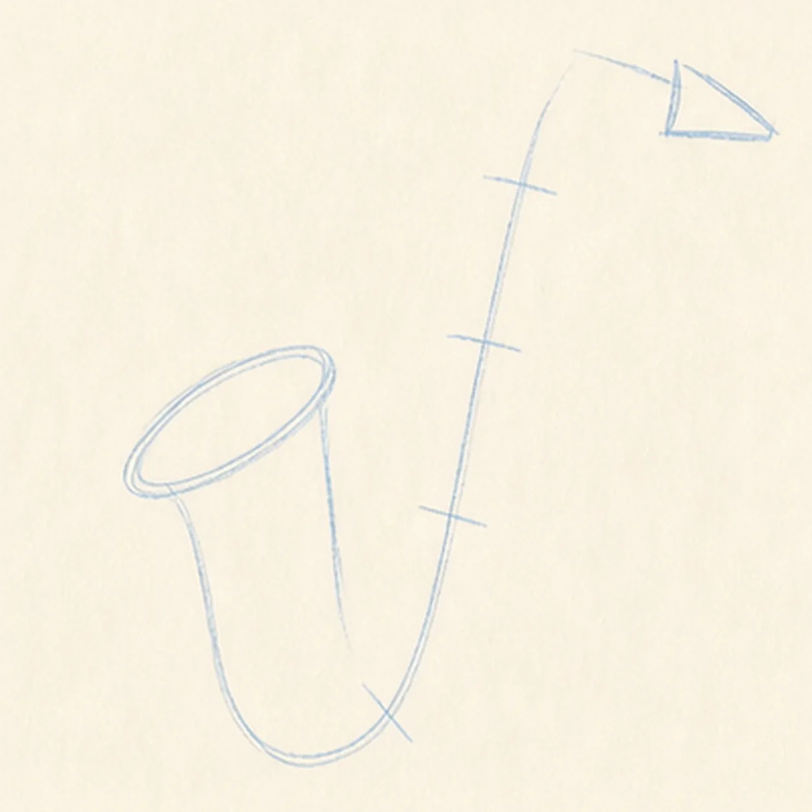
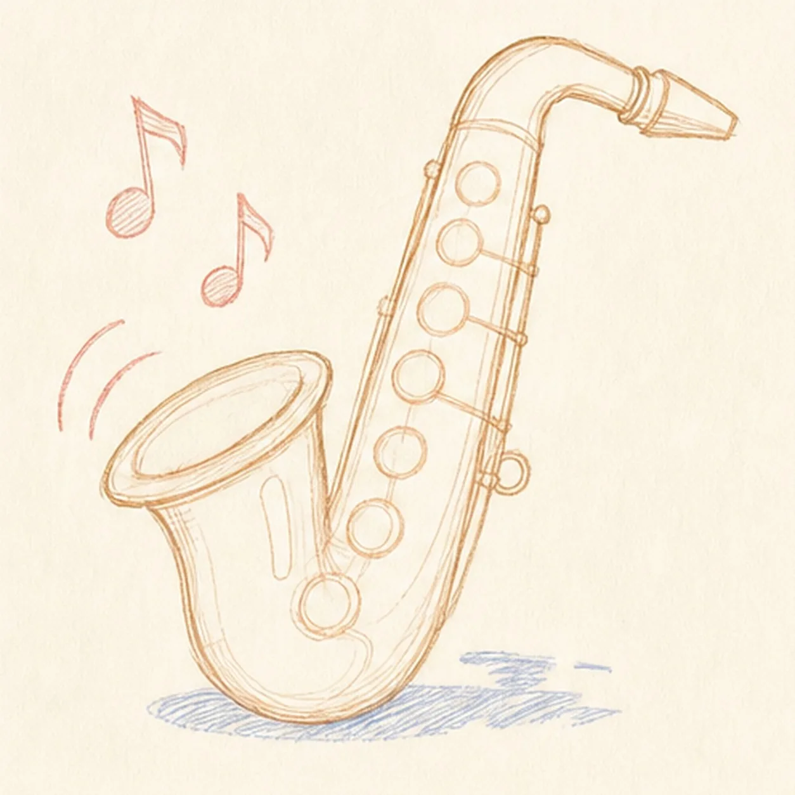
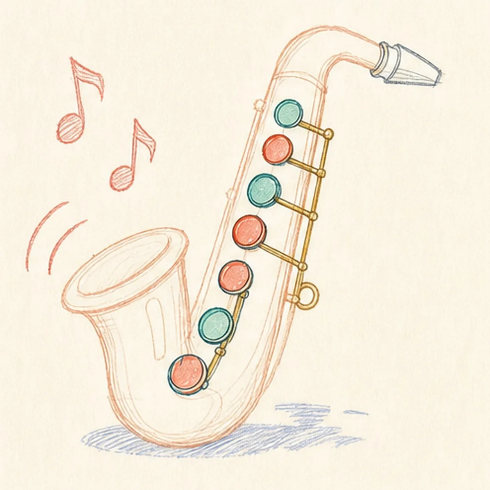
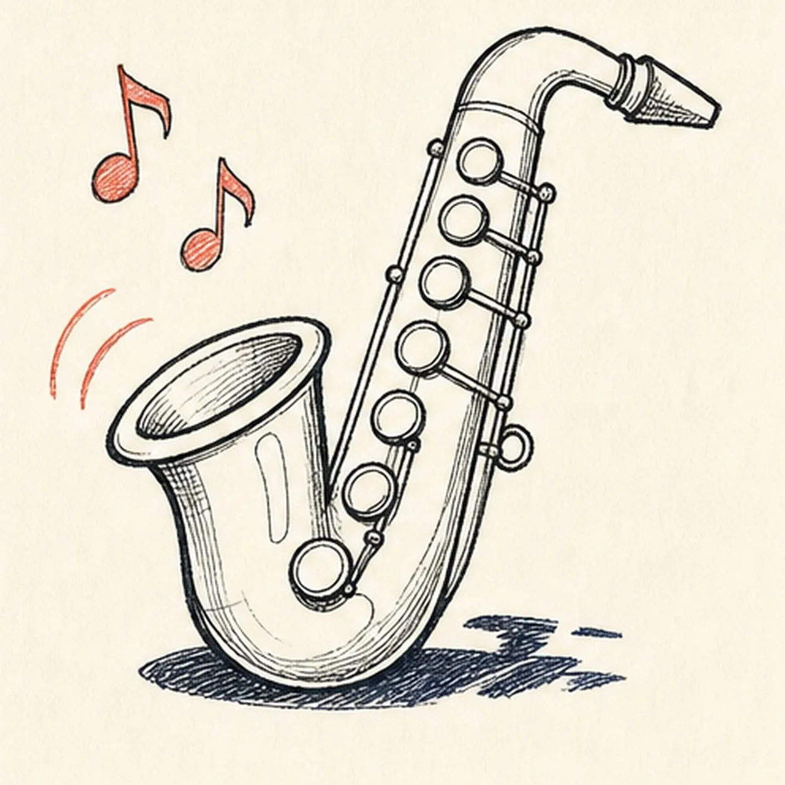
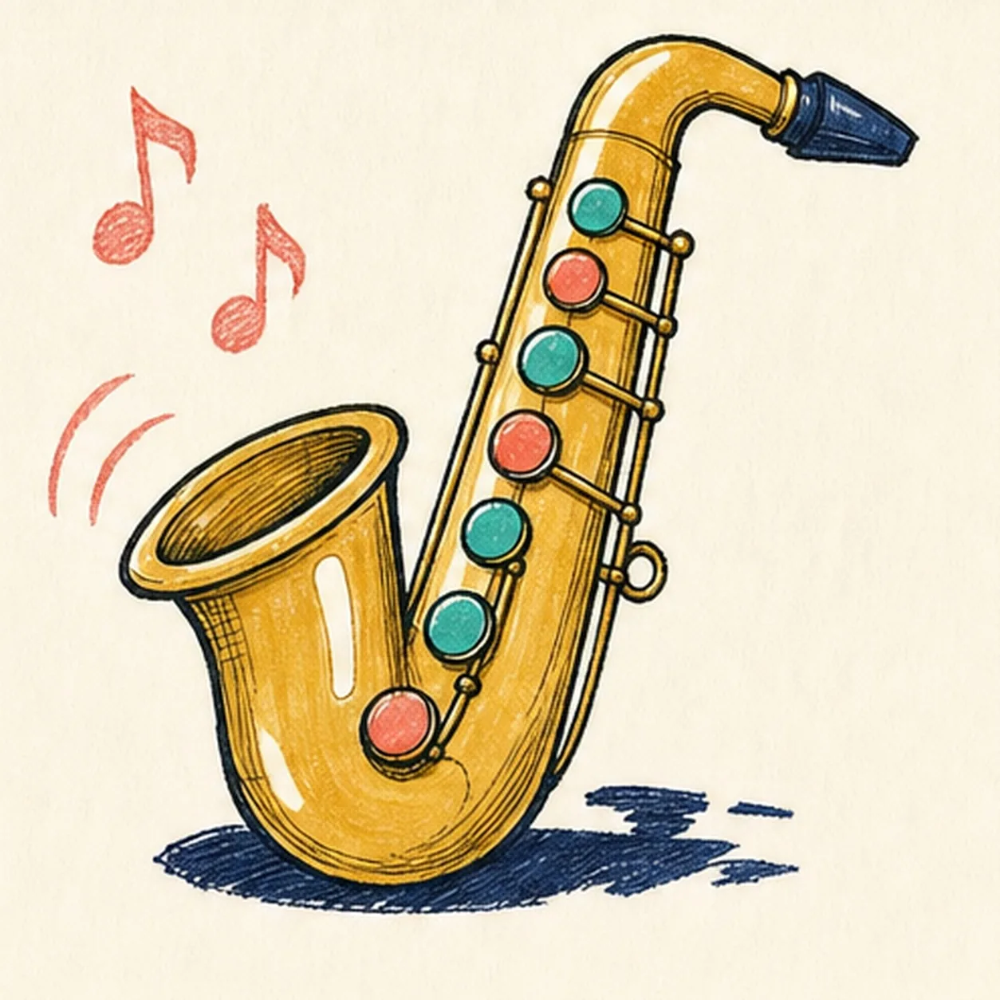
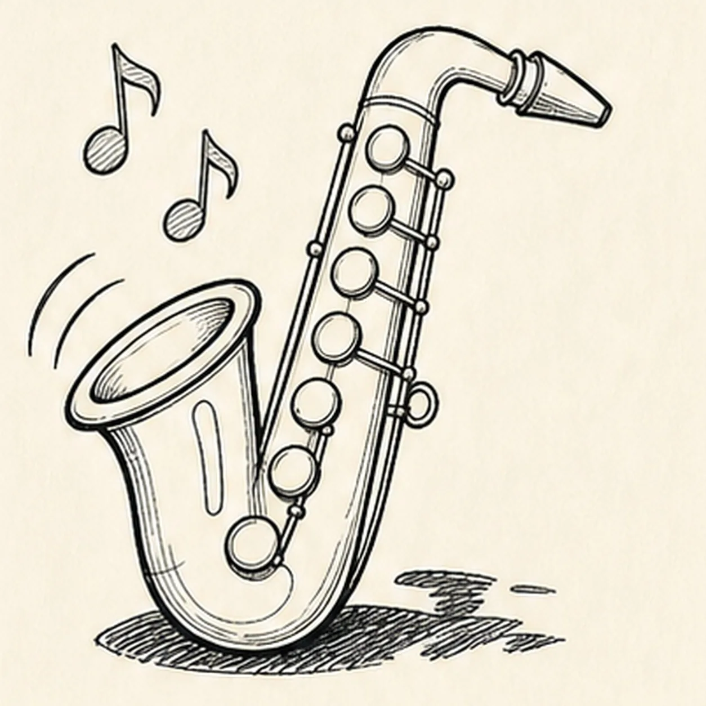
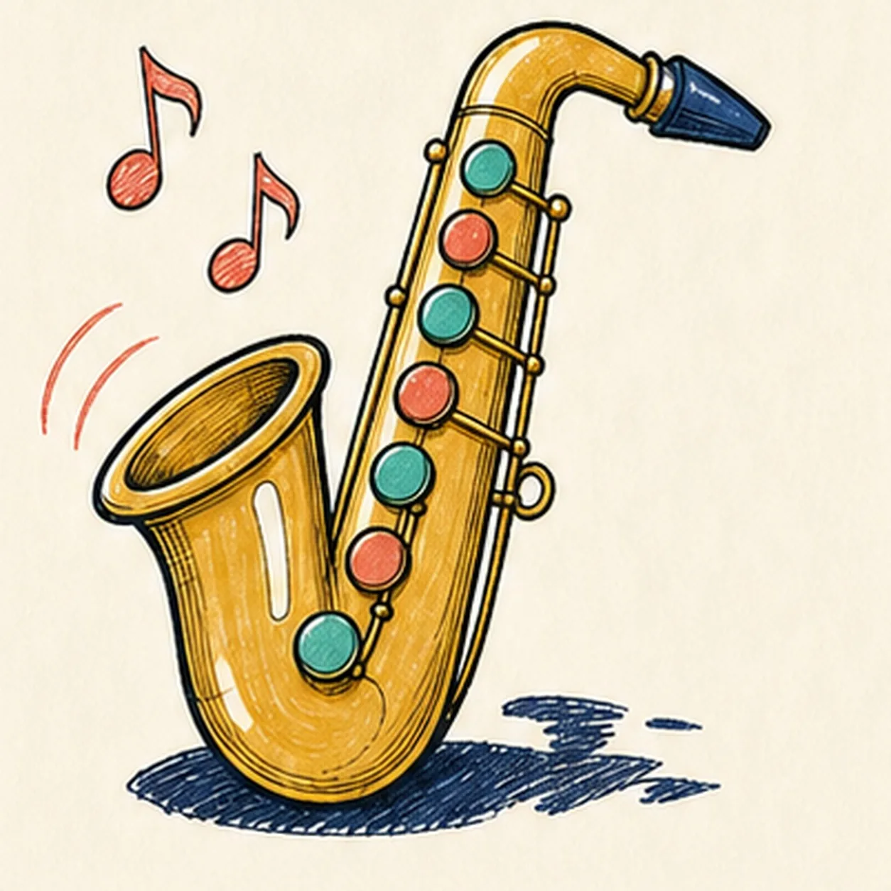

Felt-tip marker mode
Let's draw a cartoon saxophone with music notes
Treat this as one playful practice round: sketch the idea loosely, simplify the shapes, then commit with confident marker outlines and bright fills.
-
01

Gesture the bell and J curve
Begin with only pale construction: tilt one large ellipse for the bell, sweep a long J-shaped centerline through the body, add a few tube-width cross guides, raise the neck axis, and cap it with a small mouthpiece wedge.
Marker tip: This stage should still look like a diagram, not a saxophone. Ghost the J curve before touching down, keep the bell ellipse wider than the neck, and leave out every key, note, reflection, shadow, and decorative mark.
-
02

Wrap the rough saxophone silhouette
Draw a loose outer contour around the guides to form the flared bell, rounded lower bow, rising body tube, bent neck, and tapered mouthpiece while leaving the blue construction visible.
Marker tip: Work from the bell down through the bow and back up the neck. Keep the tube thickness fairly even, and use the cross guides to stop the two sides from pinching together.
-
03

Refine the bell and neck structure
Clarify the bell with a doubled rim, define the lower bow seam, add two narrow neck collars, sharpen the mouthpiece planes, and sketch one pale curved guide for the later key rhythm.
Marker tip: Treat the bell rim as two nested ellipses and make the collar bands follow the neck's bend. Do not add key circles yet—the curved guide is enough to reserve their path.
-
04

Place seven key pads
Space exactly seven unfilled circles along the curved key guide, stepping them from the upper tube toward the lower bow, then add the small strap loop on the outside edge.
Marker tip: Place the top and bottom pads first, divide the gap with five more, and count all seven before moving on. Keep every circle open so color remains a later, clearly visible step.
-
05

Connect the keys and sound marks
Join the pads with three long rod routes, short connector arms, and small caps. Add exactly two music notes, two sound arcs, three open-paper highlight shapes, and a light broken shadow beneath the saxophone.
Marker tip: Stop every connector at a pad or body edge instead of drawing through it. Keep the notes separate above the bell and let the shadow follow the instrument's footprint without becoming a solid block.
-
06

Ink the complete keeper drawing
Trace the established silhouette, seven pads, rods, loop, notes, arcs, highlights, and shadow with thick imperfect black felt-tip, then add restrained hatching inside the bell and hardware.
Marker tip: Ink small pads and connector arms first, then rotate the page for the long outside contour. Use the heaviest line on the silhouette and lighter hatching inside so the hardware stays readable.
-
07

Fill the brass and bright accents
Fill the saxophone with mustard and ochre, alternate teal and coral across all seven pads, color the two notes and arcs coral, and add deep navy to the mouthpiece and broken shadow while preserving the three highlights.
Marker tip: Let the black outline dry, then follow the tube's curve with visible marker strokes. Work around every pad and white highlight instead of painting through them, and resist over-layering the handmade grain.
-
08
Tune the final marker rhythm
Thicken selected established black edges, even the existing fills, deepen the existing bell hatching and broken shadow, clarify the same three highlights, and erase only pale guides that distract.
Marker tip: Count seven key pads, three rod routes, two notes, and two sound arcs before stopping. The final pass should polish what is already present—it should not add new hardware, decoration, or color areas.